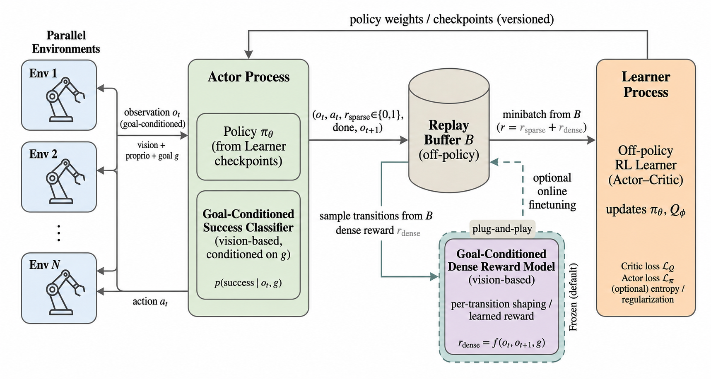
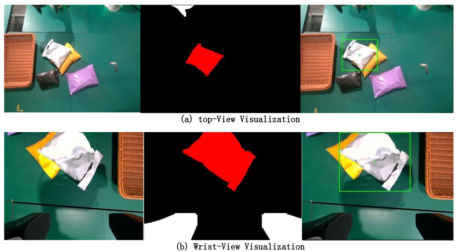
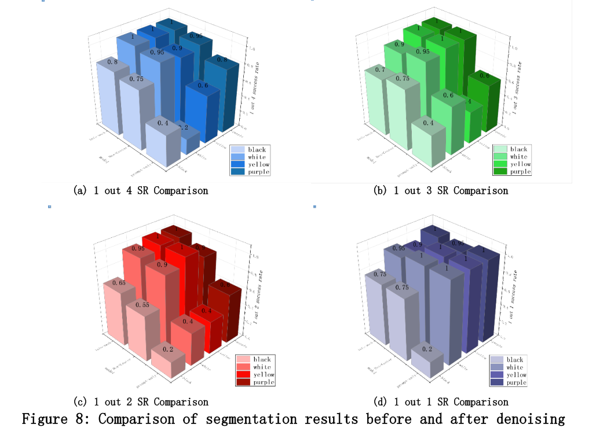
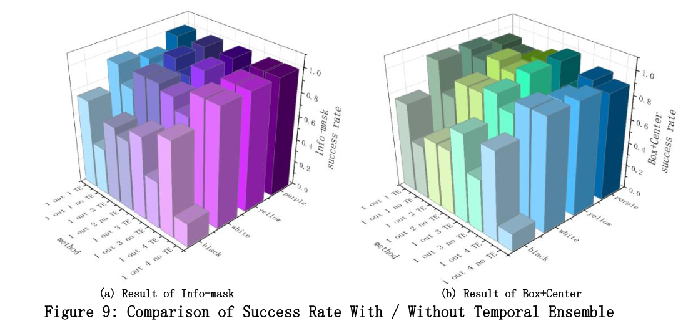
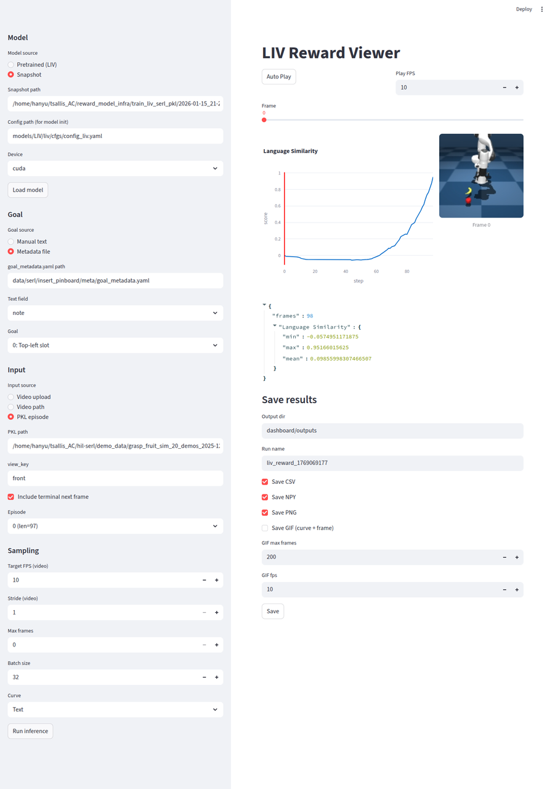

scibot
Agent
面向长序列实验操作的闭环系统，将实验协议转成任务图，并连接技能执行、状态监测和异常恢复。
Overview
面向长序列实验操作的闭环系统，将实验协议转成任务图，并连接技能执行、状态监测和异常恢复。
真实机器人项目的底座，承担运动学、IK、OTG、阻抗控制和数据采集。
面向真机策略的在线训练系统，把目标条件、rollout、对象存储和策略更新组织成闭环。
将 VLM 作为语义-几何决策层，在目标属性、局部形状和末端可执行性之间选择 grasp 或 suction。
基于 Pi05 VLA 与 Yolo11-Seg 的 goal-conditioned package grasping，覆盖视觉锚定、 E2E 策略部署和 benchmark。
将 VLM progress 和 dense reward 做成服务接口，为不同任务提供反馈信号。
Projects
项目按系统层级和展示优先级排列。每个项目以背景定位、实现范围和媒体展示组织， 突出实际系统内容与项目之间的连接。
Project 01 / Agent
面向长序列实验操作的闭环智能体系统。核心是把实验目标、协议文本、 平台约束和状态反馈编排成可执行、可监测、可恢复的机器人任务图。
Scibot 面向长序列实验操作，不把机器人看成单个动作执行器，而是把实验协议、 资源约束、技能调用和状态反馈组织成可执行的闭环任务系统。每个子步骤都被表示为 带输入资源、目标状态、执行技能、成功判据和恢复策略的任务节点。
Project 02 / Platform Infra
运控与数据采集基础设施。主要贡献集中在运动学、IK、OTG 和 impedance control， 为策略 rollout、数据采集和长期真机实验提供稳定执行层。
Goal conditioned RL、grasping、reward model 和数据采集系统都依赖稳定的底层执行。 这个平台承担的是机器人学习项目里的共同底座，而不是单个 demo 的临时控制代码。
Project 03 / Real-world RL
面向多目标真机策略的在线训练系统。运控基于 HIROLRobotPlatform， 系统侧负责组织 rollout、对象存储、训练任务、策略版本和评测回流。
单任务策略很容易被环境、目标位置和初始化方式锁死。Goal conditioned RL 的重点是把 “目标”显式纳入任务定义，让真机强化学习从固定目标推进到多目标条件下的可泛化执行。

Project 04 / VLM Decision
A VLM-driven affordance router for choosing between grasping and suction. The system turns object semantics, mask-level geometry and scene context into an executable manipulation primitive.
VLM 不直接控制机械臂，而是位于 perception 与 motion execution 之间： 它选择操作模式并提供可解释的决策信号，再交给底层抓取、吸取和可达性检查链路执行。 主要工程约束来自吸嘴硬件能力、深度质量、表面法向估计和极端姿态可达性。
Project 05 / Grasping + VLA
Goal-conditioned package grasping system based on Pi05 VLA and Yolo11-Seg visual grounding. 项目重点是把目标条件、数据闭环、策略部署和 benchmark 组织成可复现实验框架。



Project 06 / Reward Service
VLM based dense reward / progress model。项目目标是把 reward 计算从具体任务代码中解耦出来， 做成可支持多种 brain、VLM API 和下游 RL 任务的服务框架。
真实机器人强化学习通常卡在 reward 设计和可迁移性上。Dense Reward Model 把任务进度判断、VLM 推理和 reward 输出做成服务层，使不同任务可以共享同一套反馈接口。

Project 07 / Data System
面向无本体场景的数据采集项目。工作重点是把多视角视觉数据、同步一致性、 采集质量和项目交付组织成稳定的数据生产流程。
该项目面向没有机器人本体参与的数据采集场景，核心目标是建立可重复、 可验收、可追踪的数据生产流程。职责范围包括项目 PM、 需求拆解、进度推进和验收口径整理；研发部分主要集中在多路相机同步与 跨流一致性处理。
Stack
Methods, tooling, and engineering practices used across real robot learning projects.
Motion generation and control for real robot manipulation.
Learning-based methods for goal-conditioned and data-driven robot behavior.
Perception-driven decision making and evaluation workflows for manipulation tasks.
Software and infrastructure tools for robot development, experiment orchestration, and deployment.